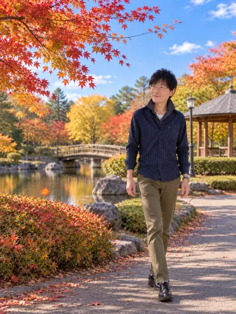

🎉 UNI-CH、誕生秘話
本コンテンツを見つけてくださり、ありがとうございます。
作者の木村晃士 (きむらこうじ) です。
もしあなたにもこの世界観を楽しんでいただけたなら幸いです🥰
「宇宙よろず相談室」は、着想・制作を開始してから、これを書いている時点で半年が経ちますが、表現したいことがまだまだ無限に湧き出ています。
現時点ではまだウェブサイトとして公開できる段階ではないのですが、なぜこのコンテンツが生まれるに至ったのか、形になる前の「目には見えない核 (コア)」を、始めに紹介しておこうと思います。

宇宙よろず相談室が生まれたのは、ある意味必然といえます。
なぜなら、「私が好きな要素」を詰め込んで、「私そのもの」を楽しみそのままに表現しているだけだから😁💡
昔から地球のおもしろおかしい分野に関心を持ち、それを数年間味わい尽くしてマスターすると満足して飽きていた私が、何十年味わい尽くしても無限に飽きないのが「スピリチュアル」の分野です。
私が今回やって来た人生のテーマと大きな関係があると思われます。
内側で爆発しているエネルギーを形として表現できることは、本当に幸せです🌟
掘れば掘るほど、未だ知らない自分を発見し、新鮮な喜びを感じます。
だから飽きないのでしょう。
とにかく「表現すること」が大好きで、それを子供の時に強く自覚したのは、コンピュータープログラム🖥️
プログラムを組んでゲームを作り、自分の思い通りの世界観を表現することは、寝食を忘れるほど好きで、没頭していたものです。
どんな世界を表現するかで大いに参考になったのが、漫画やアニメによる表現 💭
私の「スピリチュアルを深刻に捉えない」笑い飛ばすスタンスは、ギャグ漫画を描いていた経験が活きているのかもしれません (❓)
(近年は漫画を見なくなったけど、その時間は VTuber を楽しむことに流れてる)
その後、十数年に及ぶ自己啓発の執筆や書評やスピリチュアルなウェブサイト ( Dr.YOU とユニちゃんの元ネタ) の運営を経て、さらに十数年の「反自己」の期間に入ります。
長い人生において「自分ではないもの」を試す時期というのは、逆に「自分らしさ」を強く認識させる、最後のサビ落とし期間と言えます。
こうして、地球の集合意識からはちょっと外れた意識で生きながら、同時に地球人の悩みや苦しみも理解する私が、長い時間をかけて出来上がったわけです。
(ちなみに、こういう人は1945年頃から増えていて、あなたやあなたの隣人もそうかも？)
私は Dr.YOU とユニちゃんが動き回る「器」を用意しただけなので、私のエゴとは無関係に自由に動き回る彼らの活躍を、時には笑って時には驚いて楽しんでいます。
あなたにも彼らを一緒に可愛がってもらえると、心より嬉しいです‼️‼️‼️

2026年11月